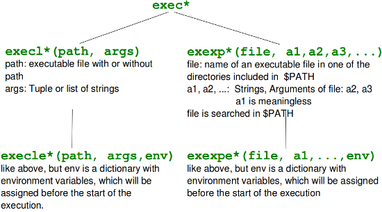

Fork und Prozesse
Fork
Long before biologists started their research of cloning, computer scientists had a successful
history of cloning. They cloned processes, though they didn't call it cloning but forking.
Forking is one of the most important aspects of Unix and Linux. When a process forks,
it creates a copy of itself.
More generally, a fork in a multithreading environment means that a thread of execution is duplicated,
creating a child thread from the parent thread. they are identical but can be told apart.
The fork operation creates a separate address space for the child.
The child process has an exact copy of all the memory of the parent process. The execution
of the parent and child process is independent of each other.
In computer science the term fork stands for at least two different aspects:
- The cloning of a process, as roughly described above.
- In software engineering, a project fork happens when developers take a legal copy of source code from one software package and start independent development on it. This way starting a distinct piece of software.
Fork in Python
The system function call fork() creates a copy of the process, which has called it. This copy runs as a child process of the calling process. The child process gets the data and the code of the parent process. The child process receives a process number (PID, Process IDentifier) of its own from the operating system. The child process runs as an independant instance, i.e. independent of the parent process. With the return value of fork() we can decide in which process we are: 0 means that we are in the child process while a positive return value means, that we are in the parent process. A negative return value means that an error occurred while trying to fork.To be able to fork processes we need to import the os module in Python.
The following example shows a parent process, which forks every time the user types in a "q", when prompted. Both the child process and the parent process continue after the if statement. The value of newpid is greater than 0 in the parent process and 0 in the child process. The exit statement
os.exit(0)
of the child function is necessary, because otherwiese the child process would return into the parentprocess,
i.e. to the raw_input statement.
import os
def child():
print 'A new child ', os.getpid( )
os._exit(0)
def parent():
while True:
newpid = os.fork()
if newpid == 0:
child()
else:
pids = (os.getpid(), newpid)
print "parent: %d, child: %d" % pids
if raw_input( ) == 'q': break
parent()
Starting independent Processes via fork()
So far we have called functions in our examples which are defined in the same script file.Forks are often used to start independent programs. To do this we need the exec*() funktions.
They execute a new program by replacing the current process by this program. They do not return to the program which has called them. They even receive the same process ID as the calling program.
The exec*()-Functions
The exec*()-Funktionen are available in various formats:- os.execl(path, arg0, arg1, ...)
- os.execle(path, arg0, arg1, ..., env)
- os.execlp(file, arg0, arg1, ...)
- os.execlpe(file, arg0, arg1, ..., env)
- os.execv(path, args)
- os.execve(path, args, env)
- os.execvp(file, args)
- os.execvpe(file, args, env)
We will use a bash shell script, which we save under test.sh in the directory /home/monty/bin2 To understand the follwing examples it's only necessary, that the script test.sh is not included in a directory which is included in the PATH (the environment variable $PATH of bash). test.sh has to be executable:
chmod 755 test.sh#!/bin/bash script_name=$0 arg1=$1 current=`pwd` echo $script_name, $arg1 echo "XYZ: "$XYZ echo "PATH: "$PATH echo "current directory: $current"The Python script execvp.py, which calls our script test.sh, is saved in a different directory, e.g. /home/monty/python:
#!/usr/bin/python
import os
args = ("test","abc")
os.execvp("test.sh", args)
As test.sh can't be found in any of the $PATH locations, we get an error message, if we call execvp in a command
line:
$ ./execvp.py
Traceback (most recent call last):
File "./execvp.py", line 6, in <module>
os.execvp("test.sh", args)
File "/usr/lib/python2.6/os.py", line 344, in execvp
_execvpe(file, args)
File "/usr/lib/python2.6/os.py", line 380, in _execvpe
func(fullname, *argrest)
OSError: [Errno 2] No such file or directory
To prevent this error message, and to achieve that our shell script is called, we extend the PATH environment
variable with the directory which contains test.sh steht, in our case /home/monty/bin2:
$ PATH=$PATH:/home/monty/bin2 $ ./execvp.py /home/monty/bin2/test.sh, abc XYZ: PATH: /usr/local/sbin:/usr/local/bin:/usr/sbin:/usr/bin:/sbin:/bin:/usr/games:/bin:/home/monty/bin:/home/monty/bin2 current directory: /home/monty/pythonAnother elegant possibiliy to extend the search path PATH offers the execvpe()-function. This function has a third parameter which is a dictionary with environment variables. If environment variables already exist, they will be replaced by the corresponding values of this dictionary. If an environment variable doesn't exist, e.g. "XYZ" in the next example, it will be created.
import os
env = {"PATH":"/home/monty/bin2", "XYZ":"BlaBla"}
args = ("test","abc")
os.execvpe("test.sh", args, env)
If we save this script under the file name execvpe.py, we receive the following output, if we call it:
$ ./execvpe.py /home/monty/bin2/test.sh, abc XYZ: BlaBla PATH: /home/monty/bin2/ current directory: /home/monty/python/ $
The value of the shell environment variable $PATH is replaced by the new value of our dictionary. If you want to avoid this, i.e. if you want to new directory to be appended to the existing path "PATH", you have to change the code like this:
import os
path = os.environ["PATH"] + ":/home/monty/bin2/"
env = {"PATH":path, "XYZ":"BlaBla"}
os.execlpe("test.sh", "test","abc", env)
It's possible to use execlpe() instead of execvpe(), but the code of our Python script has to be changed in the following way:
import os
env = {"PATH":"/home/monty/bin2/", "XYZ":"BlaBla"}
os.execlpe("test.sh", "test","abc", env)
Overview of the exec Functions
